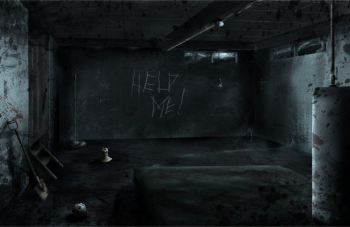

You pick up an axe you find leaning on the far side of the room. You raise it above your head and slam it down as hard as you can on to the chains.The woman breaks free and grabs ahold of you. You struggle but she has an iron grip and you see her fangs come into view. She whispers,"I'm so sorry", right before she bites down on your neck. She throws you to the ground and whips up the stairs. You know that she is trapped in the house with you with no way out, but you feel yourself start to transform. You dont have much time left you must find a way to stop it. Where do you go next?